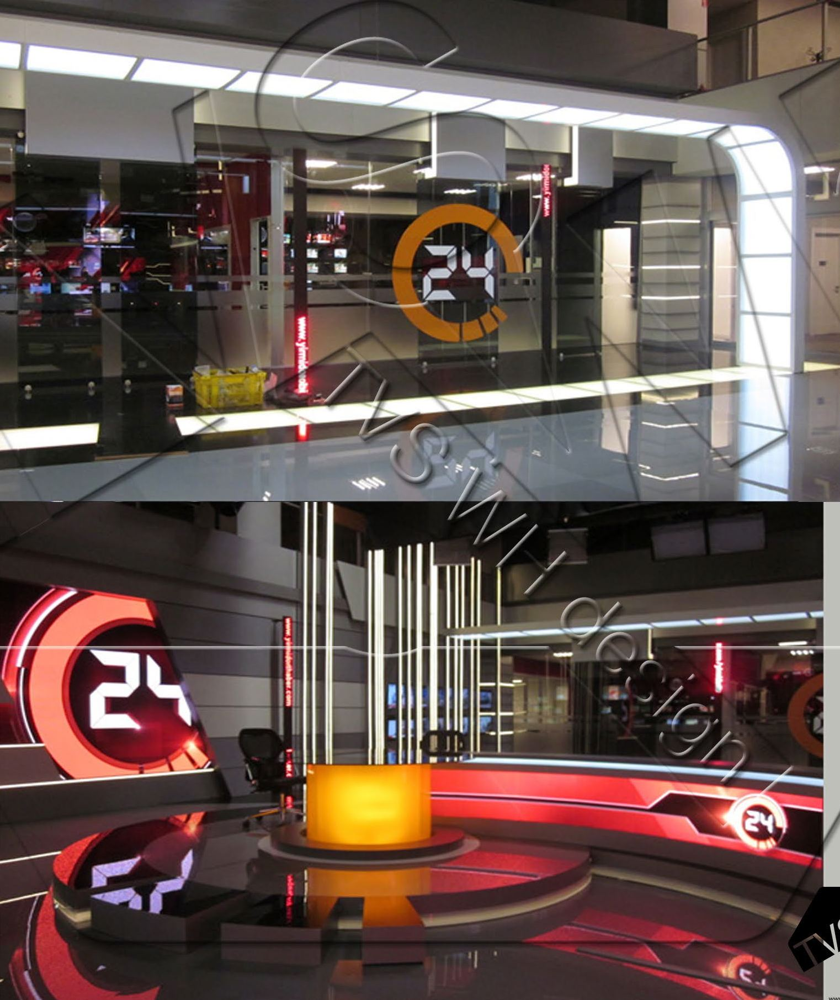
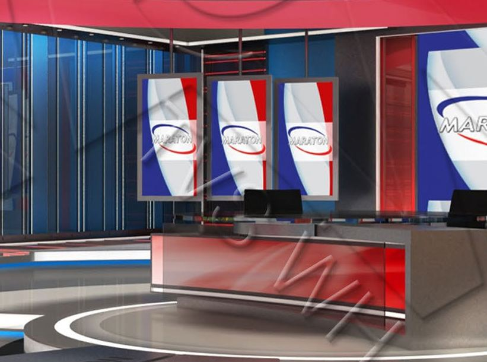
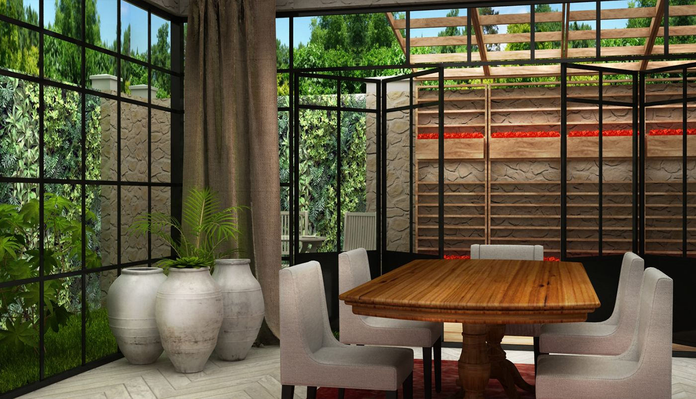
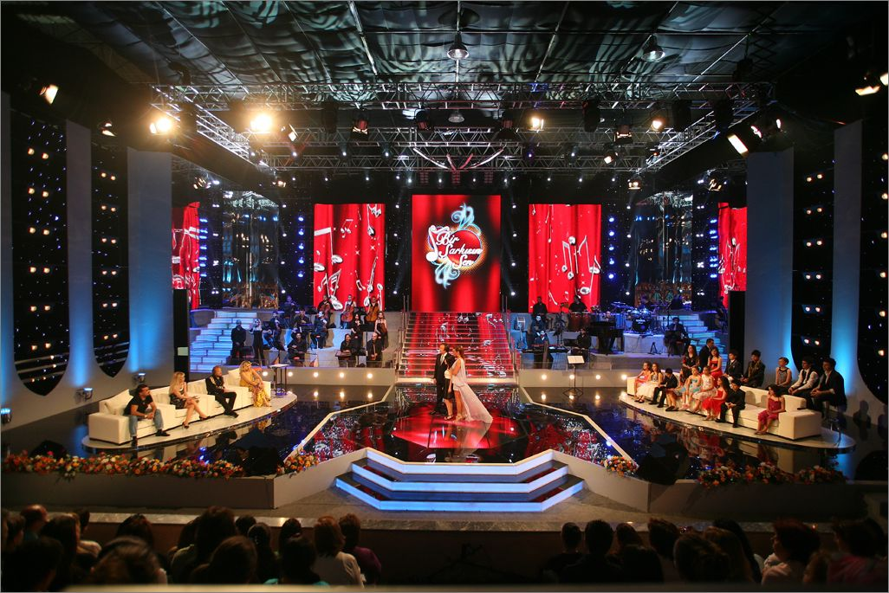
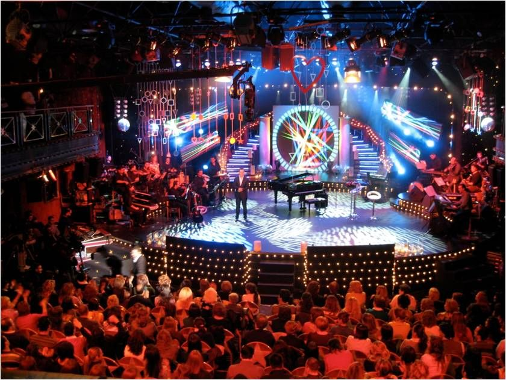
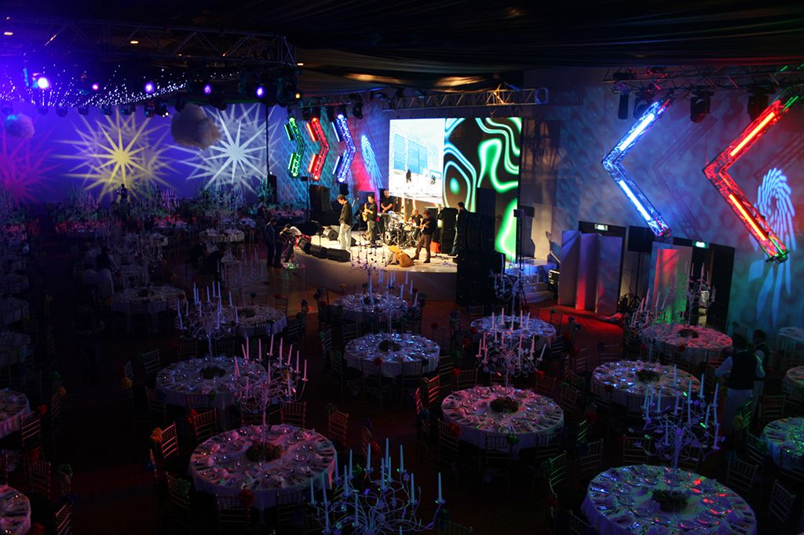

Lingo
TRT 1 · Kağıthane Studios

Studios, cameras, control rooms, sound, lighting, LED and set design: everything a television show needs, from the first sketch to the live broadcast, delivered by one team. From Istanbul to Doha, Tripoli to Duhok, Moscow to France.
This season
Shows currently on air, filmed in our studios and brought to broadcast by our team.
TRT 1 · Kağıthane Studios

NOW · Kağıthane Studios
Libya
Two divisions
The team that designs a set is the same team that builds it, lights it and takes it to air. No subcontractors in between, one point of responsibility.

TVS Production / TVS Studios
In our Istanbul studio or at your venue: full production with cameras, control room and lighting.

TVS WorkHouse
Concept, 3D design, fabrication and installation for news, sports, game shows and entertainment. Museum and venue projects.
Space planning and acoustics for studios, control rooms and media buildings.
Design of camera, sound, lighting, LED and broadcast systems.
Equipment from different manufacturers tied into one working broadcast system.
Assembly, testing and commissioning, with technical support after going on air.
For us a project does not end on handover day. Success means running smoothly for years and staying efficient to operate. We are not just a contractor but a reliable, strategic solution partner.
LED screen supply for studios, airports and events, with our technical support after installation.
Our roots
More than thirty years, from film sets to broadcast studios.
Entered the industry with film production services.
ATA Film Studios: five acoustically isolated stages on 6,500 m² in Istanbul. We designed and built them.
TEM Studios joined ATA Film Studios.
TVS Production founded.
Moscow: beIN Sports World Cup studios.
Qatar: World Cup broadcast and stadium sets.
Lingo and Kumbara in our Kağıthane studios; ongoing work for Al Jazeera and ATV.


Beyond borders
Turnkey work for broadcasters and public institutions, from the Gulf to North Africa, from Europe to the Americas.
Studio set design and build, LED screens and renovation across the network.
beIN broadcast studio sets in Moscow for the 2018 FIFA World Cup.
2022 FIFA World Cup: broadcast sets, stadium installations and event production.

Design and construction: from empty land to on air, a media complex with acoustically isolated stages, home to two national TV channels, a radio station and a newspaper.
Airport opening ceremony production.
Museum renovation: design and installation.
Airport LED screens and lighting.
17 February and 23 October Liberation Day celebrations, events at Rixos, numerous congresses, openings and launches.
Royal symposium event in Jordan.
beIN Sports broadcast studios in Doha.
Channel project during the 2022 FIFA World Cup.
Studio sets for the channel.
Broadcast studio set design and a fully equipped outside broadcast van.
TV sets, opening events, and stage design and installation.
Fully equipped outside broadcast vans for Equidia and HC Racing in France and for Salam TV in Libya: design, build and delivery.
Teaching studio projects for universities.
TVS supplied every LED screen in the new studios and continues to provide technical support.
Sports news studio set and LED screens.
Studio sets for the channel.
News studio project.
Esports project.
Our design studio
Our Istanbul design team creates sets and stages for news, sports, game shows and entertainment, award ceremonies, museums and events. Because design and build sit under one roof, every set we draw can actually be built, and its budget is clear from day one.
The first idea, shaped by the show format, camera angles and brand identity.
Photorealistic renders in 3ds Max, so you see the studio before it exists.
AutoCAD drawings, LED and lighting plots, materials and cost breakdown.
Workshop fabrication, on-site installation, lighting and LED integration, handed over ready for air.
Designed by TVS WorkHouse
A selection of studios we designed and built for Türkiye's main networks.
















Who we work with
Broadcasters and organisations we have built studios for, designed stages for and worked alongside over the years.
TVS Group
Our work beyond media runs under its own brands.
Turnkey construction and project development, Istanbul.
smartyapim.com → Marine · YachtingSailing trips and yacht charter from Fethiye.
sailamor.com →Boat fleet operation and yacht management.
Broadcast technology consulting and systems integration. Technology projects abroad, including automatic water meter reading and ATM automation.
Studio and office
A new show, a studio refit, an event or a project abroad: we define the brief with you in the first meeting and come back with a design and a budget.
Accessibility
We want everyone, including blind and partially sighted visitors, to be able to use this site comfortably. Our target is level AA of the W3C Web Content Accessibility Guidelines (WCAG) 2.2.
If you find a part you cannot read or reach, let us know and we will send you the content in a form that works for you: info@tvs.com.tr · 444 88 87